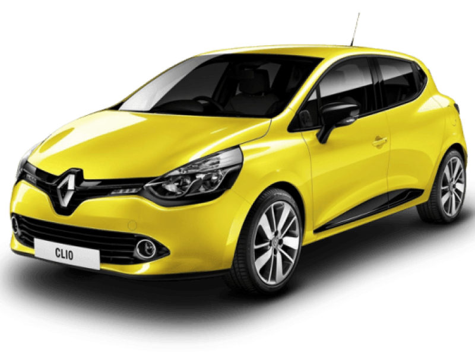

La Renault Clio IV (nom de code X98) est une citadine polyvalente du constructeur automobile français Renault produite à partir de 2012. Il s'agit de la quatrième génération de Clio après la Clio I en 1990, la Clio II en 1998 et Clio III en 2006. Avec plus de 100 000 exemplaires par an, elle est la voiture la plus vendue en France entre 2013 et 2018 devant sa principale rivale : la Peugeot 208.